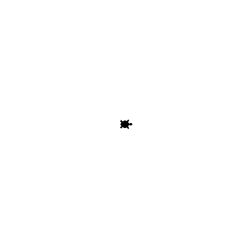

Iteratief ontwerpen#
Overal herhalingen

Oneindige fractals … Zie Xaos voor de hypnotiserende ervaring!
Herhalingen#
while met ontsnapping!
from random import choice
def escape(hidden):
guess = 0
count = 0
while guess != hidden:
guess = choice(range(100))
count += 1
return count
Simulaties#
Monte Carlo simulaties …
LC = [escape(42) for _ in range(1000)]
sum(LC) / len(LC)
101.633
Verjaardagenparadox#
Wat is de kans dat iemand op dezelfde dag jarig is?
Met hoeveel mensen bij elkaar is deze kans 50%?
Kan dit worden gesimuleerd?
Aanpak?#
Vul één voor één een kamer met mensen tot twee dezelfde verjaardag hebben.
De ontsnapping?
Bijf de kamer vullen zolang (while) de verjaardagen in de kamer uniek zijn!
De kamer? Een list!
def until_a_repeat(high):
"""Fills a list of random values until a first repeat
Argument: high, the random value upper boundary
Return value: the number of elements in the list.
"""
Hoe lang tot een herhaling?#
Sneller dan je denkt!

def unique(L):
"""Returns whether all elements in L are unique.
Argument: L, a list of any elements.
Return value: True, if all elements in L are unique,
or False, if there is any repeated element
"""
if len(L) == 0:
return True
elif L[0] in L[1:]:
return False
else:
return unique(L[1:])
Deze hulpfunctie wordt gegeven!
Een verjaardag is maar een dag#
L = [bday for bday in range(365)]
L[:10]
[0, 1, 2, 3, 4, 5, 6, 7, 8, 9]
Zet 1 Januari op 0, en verder tot 31 december (364) …
unique(L)
True
Toevallige verjaardagen#
Simulatie met random!
%run simulate.py
LC = [until_a_repeat(365) for _ in range(1000)]
LC[:10]
[18, 16, 22, 18, 46, 14, 10, 45, 20, 10]
min(LC)
3
max(LC)
78
sum(LC) / len(LC)
25.246
Denken in lussen#
for
for x in range(42):
print(x)
while
x = 1
while x < 42:
print(x)
x *= 2
Verschillen#
Wat zijn de verschillen in ontwerp tussen deze twee Python lussen?
for — eindige herhaling
Voor een bestaande list of bekend aantal herhalingen
while — oneindige herhaling
Voor een onbekend aantal herhalingen
Pi met pijltjes#
Pi of \(\pi\) is een constante: de verhouding tussen de omtrek en de diameter van een cirkel
Pithon?#
import math
math.pi
3.141592653589793
Pi bepalen?#
Kan \(\pi\) worden bepaald door middel van een simulatie?


Algoritme#
gooi een aantal pijlen willekeurig (random!) op het vlak
tel het aantal pijlen dat is geland in de cirkel
bereken \(\pi\) als volgt

Hoe werkt dit?#
Verhoudingen!
Gegeven: het oppervlakte van een cirkel is gelijk aan \(\pi \cdot r^2\)
Oppervlakte cirkel
Straal \(r\) is in dit geval 0.5, de oppervlakte van de cirkel is dus \(\pi \cdot 0.25\), of \(\dfrac{\pi}{4}\)
Oppervlakte vierkant
De breedte van het vierkant is 1 dus de oppervlakte van het vierkant is 1
wat kan worden vereenvoudigd tot
en vervolgens vereenvoudigd kan worden tot
for of while?#
Welke functie zal welk type lus gebruiken?
pi_one(e)
e = hoe dichtbij we bij π moeten komen
while
pi_two(n)
n = het aantal pijltjes dat gegooid moet worden
for
Simuleer!#
def for_pi(n):
"""Calculate pi with a for loop
"""
...
for_pi(100000)
3.1422
Geneste lussen#
Zijn heel erg bekend!

Seconden tikken weg …#
for minute in range(60):
for second in range(60):
tick()
Tijd vliegt!#
for year in range(84):
for month in range(12):
for day in range(f(month, year)):
for hour in range(24):
for minute in range(60):
for second in range(60):
tick()
Quiz#
Wat zal worden geprint?
for x in range(0, 1):
for y in range(x, 2):
print(x, y)
Oplossing#
for x in range(0, 1):
for y in range(x, 2):
print(x, y)
0 0
0 1
Tweedimensionale structuren#
Rijen en kolommen
Let op, als over “arrays†wordt gesproken (2D arrays): dit is wat je kent als lists!

List comprehension#
def mul_table(n):
"""Returns a multiplication table for n
"""
return [[x * y for x in range(1, n + 1)] for y in range(1, n + 1)]
mul_table(5)
[[1, 2, 3, 4, 5],
[2, 4, 6, 8, 10],
[3, 6, 9, 12, 15],
[4, 8, 12, 16, 20],
[5, 10, 15, 20, 25]]
Iteratief#
def mul_table(n):
"""Returns a multiplication table for n
"""
table = [] # start with an empty table
for x in range(1, n + 1): # for every row in this table ...
row = [] # start with an empty row
for y in range(1, n + 1): # for every column in this row ...
row += [x * y] # add the column value to the row
table += [row] # add the row to the table
return table # return table
mul_table(5)
[[1, 2, 3, 4, 5],
[2, 4, 6, 8, 10],
[3, 6, 9, 12, 15],
[4, 8, 12, 16, 20],
[5, 10, 15, 20, 25]]
Een dozijn#
def dozen(n):
"""Eggs by the dozen!
"""
for x in range(n):
row = ""
for y in range(12): # fixed, dozen is always 12!
row += "🥚"
print(row)
dozen(1)
🥚🥚🥚🥚🥚🥚🥚🥚🥚🥚🥚🥚
dozen(12)
🥚🥚🥚🥚🥚🥚🥚🥚🥚🥚🥚🥚
🥚🥚🥚🥚🥚🥚🥚🥚🥚🥚🥚🥚
🥚🥚🥚🥚🥚🥚🥚🥚🥚🥚🥚🥚
🥚🥚🥚🥚🥚🥚🥚🥚🥚🥚🥚🥚
🥚🥚🥚🥚🥚🥚🥚🥚🥚🥚🥚🥚
🥚🥚🥚🥚🥚🥚🥚🥚🥚🥚🥚🥚
🥚🥚🥚🥚🥚🥚🥚🥚🥚🥚🥚🥚
🥚🥚🥚🥚🥚🥚🥚🥚🥚🥚🥚🥚
🥚🥚🥚🥚🥚🥚🥚🥚🥚🥚🥚🥚
🥚🥚🥚🥚🥚🥚🥚🥚🥚🥚🥚🥚
🥚🥚🥚🥚🥚🥚🥚🥚🥚🥚🥚🥚
🥚🥚🥚🥚🥚🥚🥚🥚🥚🥚🥚🥚
Syntax#
En semantiek…
row = ""
for y in range(12):
row += "🥚"
print(row)
🥚🥚🥚🥚🥚🥚🥚🥚🥚🥚🥚🥚
print(12 * "🥚")
🥚🥚🥚🥚🥚🥚🥚🥚🥚🥚🥚🥚

Python ASCII Art!
Rijen en kolommen#
En nieuwe regels …
for row in range(3):
for col in range(4):
print("#")
#
#
#
#
#
#
#
#
#
#
#
#
for row in range(3):
for col in range(4):
print("#", end="")
############
for row in range(3):
for col in range(4):
print("#", end="")
print()
####
####
####
____ _
/ ___| _ _ ___ ___ ___ ___| |
\___ \| | | |/ __/ __/ _ \/ __| |
___) | |_| | (_| (_| __/\__ \_|
|____/ \__,_|\___\___\___||___(_)